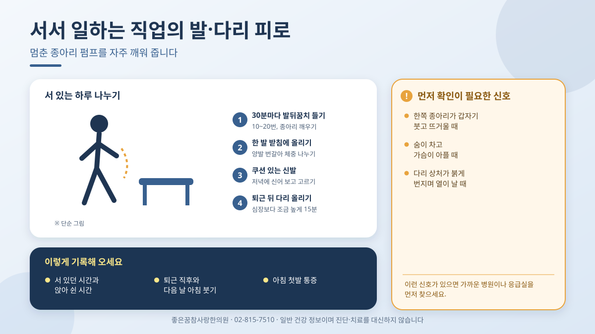

이종호 한의사 감수좋은꿈참사랑한의원 대표원장 (한의사 면허번호 19769)발행 2026-11-26 · 수정 2026-11-26
이 글의 차례
퇴근길 지하철에서 겨우 자리에 앉자마자 발바닥이 후끈 달아오릅니다. 집에 와서 양말을 벗으면 발목에 고무줄 자국이 깊게 패어 있고, 종아리는 돌덩이처럼 무겁습니다. 다리를 벽에 올려 두고 누워 있어야 조금 살 것 같은데, 내일 아침이면 다시 하루 종일 서 있어야 합니다.
매장에서 손님을 맞는 분, 병동을 오가는 간호사, 강단에 서는 강사, 공장 라인에서 일하는 분, 계산대와 주방을 지키는 분까지, 하루 대부분을 서서 보내는 직업은 생각보다 많습니다. 이분들께 진료실에서 가장 자주 듣는 말이 "저녁만 되면 다리가 내 다리가 아닌 것 같아요"입니다.
오래 서 있는 일은 걷는 것보다 오히려 다리에 부담이 큽니다. 걸을 때는 종아리 근육이 펌프처럼 피를 심장 쪽으로 올려 보내지만, 가만히 서 있으면 그 펌프가 거의 멈추기 때문입니다. 그 사이 발바닥은 몸무게를 한자리에서 계속 받아 냅니다.
이 글에서는 오래 서서 일할 때 발바닥과 다리가 왜 지치는지, 그냥 피로와 따로 살펴야 할 상태를 어떻게 나눠 보는지, 일하면서 해 볼 수 있는 요령과 한의원에서 함께 살필 수 있는 부분을 정리해 보겠습니다.
오래 서 있으면 왜 다리가 무거워질까요
다리에 내려온 피는 중력을 거슬러 심장으로 돌아가야 합니다. 이때 큰 역할을 하는 것이 종아리 근육입니다. 걸을 때마다 종아리가 수축하며 정맥을 짜 주고, 정맥 안의 판막이 피가 거꾸로 흐르지 않게 막아 줍니다. 그래서 종아리를 흔히 두 번째 심장이라고 부릅니다.
한자리에 오래 서 있으면 이 펌프가 거의 쉬게 됩니다. 피와 림프액이 발목과 종아리에 고이면서 붓고, 무겁고, 저녁이면 양말 자국이 깊게 남습니다. 서 있는 시간이 길수록, 날이 더울수록, 짜게 먹은 날일수록 더 심해집니다.
같은 자세로 버티는 종아리와 허벅지 근육도 쉬지 못하고 지칩니다. 근육이 지치면 단단하게 뭉치고, 밤에 쥐가 나기도 합니다. 허리와 골반도 함께 버티느라 저녁이면 허리가 묵직해지는 분이 많습니다.
나이가 들면서 종아리 근육이 줄어들면 펌프의 힘도 약해집니다. 같은 시간을 서 있어도 예전보다 다리가 더 붓고 무겁다고 느끼시는 이유 가운데 하나입니다. 종아리 근육을 지키는 운동이 서서 일하는 분들께 특히 의미 있는 이유입니다.
왜 발바닥이 화끈거리고 아플까요
발바닥은 몸무게를 받아 내는 쿠션입니다. 발뒤꿈치의 두툼한 지방층과 발 아치를 받치는 근막이 충격을 나눠 받습니다. 그런데 딱딱한 바닥 위에서 몇 시간씩 서 있으면 같은 자리에 압력이 계속 실려 근막과 지방층이 쉬지 못합니다.
그래서 저녁이면 발바닥 전체가 화끈거리고, 발뒤꿈치나 발 아치 쪽이 욱신거립니다. 이런 날이 쌓이면 아침 첫발을 디딜 때 발뒤꿈치가 찌릿한 족저근막염으로 이어지기도 합니다.
평발이거나 발 아치가 높은 분, 체중이 늘어난 분, 바닥이 얇고 딱딱한 신발을 신는 분은 발바닥에 부담이 더 몰립니다. 한쪽 다리에만 체중을 싣고 서는 습관이 있으면 그쪽 발바닥과 무릎, 골반이 더 지칩니다.
한의학에서는 오래 서 있으면 뼈가 상한다는 옛말이 있고, 저녁마다 다리가 붓고 무거운 모습을 기운이 아래로 처지고 습이 머무는 모습으로 설명해 왔습니다. 이는 진찰할 때 참고하는 전통적인 묘사이지 진단을 대신하지 않습니다.
그냥 피로와 따로 살펴야 할 상태는 무엇인가요
오래 서서 생긴 다리 피로는 대개 쉬거나 자고 나면 덜해집니다. 하지만 비슷해 보여도 따로 살펴야 할 상태가 있습니다. 하나만 해당하기도 하고, 둘 이상이 겹치기도 합니다.
- 족저근막염: 아침 첫발이나 오래 앉았다 일어설 때 발뒤꿈치 안쪽이 찌릿하고, 조금 걸으면 덜해집니다.
- 하지정맥류: 종아리 핏줄이 울퉁불퉁 튀어나오고, 저녁이면 다리가 무겁고 가렵거나 쥐가 납니다.
- 몸 전체 부종: 다리뿐 아니라 얼굴과 손도 붓고, 소변량 변화나 숨참이 함께 있을 수 있습니다.
- 평발과 발 아치 통증: 발바닥 안쪽이 아프고 발목이 안쪽으로 무너지는 모습이 보입니다.
- 허리에서 내려오는 저림: 다리 저림이 엉덩이부터 이어지고, 허리를 숙이거나 오래 서 있을 때 심해집니다.
- 굳은살과 티눈: 발바닥 특정 자리가 걸을 때마다 콕콕 찌르듯 아픕니다.
양쪽 다리가 비슷하게 붓는지, 한쪽만 붓는지도 중요한 단서입니다. 한쪽만 유난히 붓고 아프다면 혈관 문제를 먼저 확인해야 할 수 있습니다. 붓기가 아침까지 빠지지 않거나 점점 심해진다면 내과 진료를 함께 받아 보시는 것이 좋습니다.
직업마다 부담이 몰리는 모습이 다릅니다
매장이나 계산대처럼 한자리에 서 있는 일은 종아리 펌프가 가장 적게 움직여 붓기가 심합니다. 병동이나 물류 창고처럼 서서 많이 걷는 일은 붓기보다 발바닥과 발뒤꿈치, 무릎의 피로가 먼저 옵니다.
강의나 판서를 하는 일은 서서 고개를 들고 팔을 쓰니 목과 어깨, 허리가 함께 지칩니다. 공장 라인이나 주방처럼 딱딱한 바닥에 서서 몸을 앞으로 숙이는 일은 허리와 발바닥에 부담이 큽니다.
굽 높은 구두나 얇은 바닥의 근무화를 신어야 하는 직업은 발 앞쪽과 발가락, 종아리에 부담이 몰립니다. 그래서 진료실에서는 같은 '서서 일하기'라도 어떤 자세로, 어떤 바닥에서, 어떤 신발을 신고 서 있는지를 꼭 여쭙니다.
신발은 어떻게 고르면 좋을까요
서서 일하는 분들께 신발은 하루 종일 몸을 받치는 도구입니다. 발뒤꿈치 쪽에 쿠션이 충분하고, 발 아치를 살짝 받쳐 주며, 발가락 쪽이 넉넉해 발가락을 움직일 수 있는 신발이 좋습니다. 바닥이 너무 얇거나 너무 푹신해 발이 흔들리는 신발은 오히려 쉽게 지치게 합니다.
신발은 발이 가장 부은 저녁 무렵에 신어 보고 고르시길 권합니다. 아침에 맞던 신발이 오후에는 꽉 끼어 발등과 발가락을 누르는 일이 흔하기 때문입니다. 쿠션은 몇 달 신으면 눌려 꺼지니, 뒤꿈치 바닥이 한쪽으로 닳았다면 바꿀 때가 된 것입니다.
근무화를 두 켤레 마련해 번갈아 신는 것도 방법입니다. 하루 신은 신발은 쿠션이 회복되고 습기가 마를 시간이 필요합니다. 굽 있는 구두를 신어야 하는 직업이라면 출퇴근길만이라도 편한 신발로 바꿔 신어 발을 쉬게 해 주세요.
쉬는 날과 출퇴근길은 어떻게 보내면 좋을까요
쉬는 날 하루 종일 누워만 있으면 오히려 다음 날 다리가 더 무겁다고 하시는 분이 많습니다. 가볍게 걷거나 수영, 자전거처럼 종아리를 리듬 있게 쓰는 운동이 다리 순환을 돕습니다. 오래 서 있던 다리에는 서 있는 것과 다른 움직임이 휴식이 됩니다.
출퇴근길 지하철이나 버스에서 또 서 있어야 한다면, 그 시간에도 발뒤꿈치를 살짝 들었다 내리거나 체중을 양발에 번갈아 실어 보세요. 자리에 앉게 되면 발목을 까딱이며 종아리를 깨워 주는 것이 좋습니다.
잠도 다리의 회복에 중요합니다. 교대 근무나 늦은 퇴근으로 잠드는 시각이 들쭉날쭉하면 몸의 붓기가 잘 빠지지 않고 근육 피로도 다음 날로 넘어갑니다. 잠드는 시각을 가능한 한 일정하게 지키고, 잠들기 전 다리를 잠시 올려 두는 습관을 함께 들여 보세요.
먼저 이렇게 여쭙니다
처음 오시면 저는 대략 이런 순서로 여쭙니다. 미리 생각해 오시면 이야기가 훨씬 수월해집니다.
- 하루 몇 시간 서서 일하시고, 한자리에 서 있나요 아니면 걸어 다니나요?
- 바닥은 딱딱한가요? 어떤 신발을 신고 일하시나요?
- 발바닥은 발뒤꿈치, 아치, 앞쪽 중 어디가 아픈가요? 아침 첫발이 아픈가요?
- 다리는 양쪽이 비슷하게 붓나요, 한쪽만 붓나요? 붓기가 아침까지 남나요?
- 종아리 핏줄이 도드라지거나 밤에 쥐가 나나요?
- 다리 저림이 허리나 엉덩이부터 이어지나요?
- 드시는 약이 있나요? 혈압, 심장, 신장, 갑상선 관련 진료를 받고 계신가요?
모든 질문에 정확히 답하지 못하셔도 괜찮습니다. 퇴근 직후 발목과 종아리를 같은 자리에서 사진으로 찍어 오시면 하루 중 가장 부은 모습을 함께 볼 수 있습니다.
일상에서 먼저 해 볼 수 있는 것
서서 일하는 시간을 줄이기 어렵다면, 서 있는 방식과 퇴근 뒤 시간을 바꿔 보는 것이 현실적입니다. 한꺼번에 다 하시기보다 맞는 것을 골라 보세요.
- 한자리에 서 있을 때 30분마다 발뒤꿈치 들었다 내리기 10~20번
- 한 발을 낮은 받침에 번갈아 올려 체중 나누기
- 쿠션이 좋고 발 아치를 받쳐 주는 신발, 필요하면 깔창 쓰기
- 딱딱한 바닥이라면 피로 방지 매트 깔기
- 의료용 압박 스타킹은 맞는 압력을 확인한 뒤 신어 보기
- 퇴근 뒤 다리를 심장보다 조금 높게 올리고 15분 쉬기
발뒤꿈치 들기는 종아리 펌프를 깨우는 가장 간단한 방법입니다. 계산대나 작업대 앞에서도 눈에 띄지 않게 할 수 있습니다. 쉬는 시간에는 앉아서 발목을 위아래로 까딱이고 원을 그려 돌려 주세요.
자기 전에는 미지근한 물에 발을 잠시 담근 뒤, 골프공이나 작은 공을 발바닥으로 굴려 근막을 부드럽게 풀어 주는 것도 도움이 됩니다. 다만 아주 뜨거운 물은 붓기를 키울 수 있으니 피해 주세요.
짠 음식과 야식은 다음 날 붓기를 키우기 쉽습니다. 물을 너무 적게 드시면 오히려 몸이 물을 붙잡아 두려 하니, 일하는 동안 조금씩 자주 마시는 것이 좋습니다.
한의원에서 함께 살필 수 있는 경우
- 퇴근 뒤 발바닥이 화끈하고 발뒤꿈치가 욱신거리는 경우
- 아침 첫발이 아픈 족저근막염 경향이 있는 경우
- 저녁마다 종아리가 붓고 무거우며 밤에 쥐가 나는 경우
- 오래 서 있으면 허리와 골반까지 묵직해지는 경우
- 다리 피로와 함께 잠이 얕고 몸이 늘 무거운 경우
좋은꿈참사랑한의원에 오시면 먼저 아래 '먼저 확인이 필요한' 신호가 없는지부터 봅니다. 그다음 맥을 짚고, 발바닥과 종아리, 무릎, 허리로 이어지는 부담의 흐름을 차례로 만져 보며 확인합니다. 양쪽 다리의 붓기와 온도 차이도 함께 봅니다.
진찰한 내용을 바탕으로 침, 온열 관리, 체외충격파, 한약 상담 가운데 지금 상태에 맞는 것을 정합니다. 체외충격파는 족저근막염처럼 맞는 경우에 상담해서 정합니다. 한약을 상의할 때는 드시는 약을 모두 확인하고 신중하게 정하고, 임신 중이라면 먼저 알려 주시고 산부인과와 상의해 정합니다.
하지정맥류가 뚜렷하거나 몸 전체 부종이 의심되면 혈관외과나 내과 진료를 함께 권합니다. 일을 이어 가야 하는 상황을 잘 알기에, 쉬라고만 하기보다 서 있는 방식과 신발, 쉬는 시간을 함께 조정하는 쪽으로 이야기합니다.
이렇게 기록해 오시면 상담이 쉬워집니다
서서 일하는 분들의 다리 피로는 근무 시간과 환경에 따라 크게 달라집니다. 2주 정도만 간단히 적어 보세요.
- 하루 서 있었던 시간과 앉아 쉰 시간
- 발바닥 통증과 다리 무거움의 정도를 0에서 10으로
- 아침 첫발 통증이 있었는지
- 퇴근 직후와 다음 날 아침의 붓기 비교
- 신은 신발과 압박 스타킹을 신었는지
- 짠 음식이나 술을 드신 날, 밤에 쥐가 난 날
기록을 나란히 놓고 보면 어떤 날 다리가 더 지치는지가 보이기 시작합니다. 신발 하나, 쉬는 습관 하나를 바꾼 뒤의 변화도 기록으로 확인할 수 있습니다. 근무가 바뀌는 주에는 따로 표시해 두시면 근무 형태와 다리 피로의 관계도 함께 보입니다.
하루를 버틴 다리에게
오래 서서 일하는 분들의 다리는 하루 종일 쉬지 않고 몸을 받쳐 준 다리입니다. 저녁마다 무겁고 화끈거리는 것은 그만큼 애썼다는 신호이기도 합니다.
이번 주에는 30분마다 발뒤꿈치 들기, 퇴근 뒤 다리 올리고 15분 쉬기부터 시작해 보세요. 다음에 오시면 퇴근 직후 찍은 발목 사진과 기록부터 함께 보겠습니다.
이런 증상은 먼저 확인이 필요합니다
- 한쪽 종아리가 갑자기 붓고 뜨거우며 누르면 아프거나, 숨이 차고 가슴이 아픈 경우
- 다리 상처가 낫지 않고 붉은 기운이 번지며 열이 나는 경우
이런 신호가 있으면 한의원보다 가까운 병원이나 응급실을 먼저 찾으세요.
함께 읽으면 좋은 글
- 종아리 핏줄이 울퉁불퉁 튀어나오고 저녁마다 다리가 무거운 하지정맥류는 어떻게 살피나요?
- 저녁마다 다리가 붓고 양말 자국이 깊게 남을 때, 부종은 무엇을 나눠 살피나요?
- 평발이거나 발 아치가 무너져 발바닥 안쪽이 아플 때는 무엇을 살피고 어떻게 관리하나요?
- 족저근막염 통증에 체외충격파는 어떻게 사용하나요?
- 하루 종일 서서 일하면 저녁마다 허리가 묵직할 때 어떻게 살피나요?

여쭙는 것
- 하루 몇 시간 서서 일하시고, 한자리에 서 있나요 아니면 걸어 다니나요?
- 바닥은 딱딱한가요? 어떤 신발을 신고 일하시나요?
- 발바닥은 발뒤꿈치, 아치, 앞쪽 중 어디가 아픈가요? 아침 첫발이 아픈가요?
생활에서 해 볼 것
- 한자리에 서 있을 때 30분마다 발뒤꿈치 들었다 내리기 10~20번
- 한 발을 낮은 받침에 번갈아 올려 체중 나누기
- 쿠션이 좋고 발 아치를 받쳐 주는 신발, 필요하면 깔창 쓰기
한의원에서 함께 살필 것
- 퇴근 뒤 발바닥이 화끈하고 발뒤꿈치가 욱신거리는 경우
- 아침 첫발이 아픈 족저근막염 경향이 있는 경우
- 저녁마다 종아리가 붓고 무거우며 밤에 쥐가 나는 경우
먼저 확인이 필요한 신호
- 한쪽 종아리가 갑자기 붓고 뜨거우며 누르면 아프거나, 숨이 차고 가슴이 아픈 경우
- 다리 상처가 낫지 않고 붉은 기운이 번지며 열이 나는 경우
한눈에 보는 표
| 구분 | 핵심 |
|---|---|
| 여쭙는 것 | 하루 몇 시간 서서 일하시고, 한자리에 서 있나요 아니면 걸어 다니나요? 바닥은 딱딱한가요? 어떤 신발을 신고 일하시나요? |
| 생활에서 해 볼 것 | 한자리에 서 있을 때 30분마다 발뒤꿈치 들었다 내리기 10~20번 한 발을 낮은 받침에 번갈아 올려 체중 나누기 |
| 한의원에서 함께 살필 것 | 퇴근 뒤 발바닥이 화끈하고 발뒤꿈치가 욱신거리는 경우 아침 첫발이 아픈 족저근막염 경향이 있는 경우 |
| 먼저 확인이 필요한 신호 | 한쪽 종아리가 갑자기 붓고 뜨거우며 누르면 아프거나, 숨이 차고 가슴이 아픈 경우 다리 상처가 낫지 않고 붉은 기운이 번지며 열이 나는 경우 |
자주 묻는 질문
압박 스타킹은 아무거나 신어도 되나요?
압력과 길이가 다양해서 다리 상태에 맞는 것을 고르는 것이 좋습니다. 처음에는 낮은 압력부터 시작하시고, 다리에 상처나 피부 질환, 혈관 질환이 있다면 먼저 상의해 주세요.
저녁에 다리가 붓는 건 다 괜찮은 건가요?
오래 서서 생긴 붓기는 대개 쉬거나 자고 나면 빠집니다. 아침까지 남거나, 한쪽만 붓거나, 얼굴과 손도 함께 붓는다면 내과 진료를 함께 받아 보시길 권합니다.
발바닥이 아픈데 계속 서서 일해도 될까요?
쿠션 있는 신발과 매트, 발뒤꿈치 들기, 쉬는 시간 발목 돌리기로 부담을 나눠 보세요. 아침 첫발 통증이 몇 주 이어지면 진찰을 받아 보시는 것이 좋습니다.
다리를 높이 올리고 자면 도움이 되나요?
퇴근 뒤 15분 정도 다리를 심장보다 조금 높게 두는 것은 붓기를 덜어 주는 데 도움이 될 수 있습니다. 잘 때는 발목 아래에 낮은 쿠션을 두는 정도로 충분합니다.
체외충격파는 누구나 받을 수 있나요?
족저근막염처럼 맞는 경우에 진찰한 뒤 상담해서 정합니다. 임신 중이거나 피를 묽게 하는 약을 드신다면 먼저 말씀해 주세요.
좋은꿈참사랑한의원은 재진 때 지난번 이야기부터 이어서 여쭙니다. 진료시간과 예약은 오시는 길에서 확인하세요.
어디서 상담받을 수 있나요?
좋은꿈참사랑한의원은 서울 동작구 만양로2길 2 신성빌딩 3층·5층(서울 동작구 상도동, 7호선 상도역 3번 출구 근처)에 있습니다. 한의사 3명(이종호 대표원장, 조영기 수석진료원장, 정원영 진료원장)이 진료합니다. 진료시간은 평일 09:30~20:00(점심 13:00~14:00), 토·일·공휴일 09:30~15:00이며, 방문 전 전화로 확인을 권합니다. 예약은 네이버 예약, 카카오톡 상담, 전화 02-815-7510로 받습니다.
이 글은 일반적인 건강 정보이며 개인의 진단이나 치료를 대신하지 않습니다. 증상이 있거나 복용 중인 약이 있다면 진료를 통해 확인하세요. 치료 효과는 개인마다 다를 수 있습니다.
작성 기준: 일반적으로 알려져 있는 건강 정보를 참고해 정리했습니다(대표원장 감수). 증상 기록은 1~2주 동안 하루 1회, 비슷한 시간에 적어 오시면 지난 상태와 비교하기 쉽습니다.